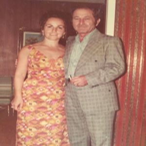
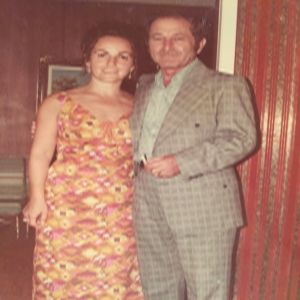

My Grandmother (aka Baba Sarah) was born June 15, 1935 Tarnow, Poland. She was born to Leika and Israel Schmuckler, as well as her sister Beila. Pre-war years were peaceful. Her dad was a merchant and her mother a tailor. When the War broke in 1939 she was only four, her memory of Tarnow is faint. The main industry was garment manufacturing and fishing. Immediately after the war broke out, harassment of the Jewish people began. The synagogues were burned down and many Jews were recruited for forced-labor programs. Many Jews fled from the city. My great grandmother Leika was able to obtain fake documents claiming her and her family were Christians. Her father was forced into a labor draft and eventually died in a concentration camp (or so we think). The three women were sent to a work camp in 1943, and were able to evade concentration camps due to their illegitimate Christian status. My baba Sarah spent the majority of her childhood hiding in work camps. Due to her age, she was unable to work (had no skills and ultimately useless) so she would go into hiding. The other women knew of her but never reported her or Leika (for committing the crime) to the SS.